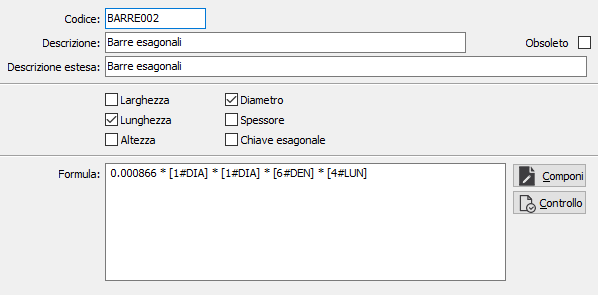
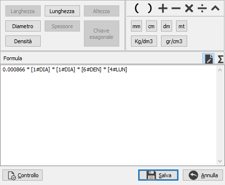
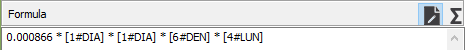
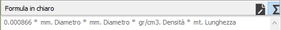

Formule misure prodotti
La procedura consente di manutenere le formule relative al calcolo del peso dei prodotti che utilizzano le misure. Sono attivi i bottoni Stampa ed Anteprima sulla toolbar per effettuare la stampa (sintetica o analitica) delle formule.

La tabella si compone di un codice alfanumerico di 8 caratteri per identificare la formula, una descrizione ed una descrizione estesa; sono presenti delle caselle di spunta per indicare quali misure sono utilizzabili quando si selezionerà la formula. Il testo della formula deve contenere le indicazioni relative ai singoli elementi ed alla loro unità di misura tra parentesi quadre ([1#SPE]), possono essere utilizzate le parentesi tonde ed i vari operatori numerici ( +, -, /, *, ^ ). Il pulsante Controllo verifica la correttezza della sintassi della formula e la validità dei caratteri e dei codici utilizzati per comporla.
La pressione sul pulsante Componi accede alla finestra di composizione dove è possibile comporre e controllare in modo semplificato la formula tramite i tasti simbolo, i pulsanti unità di misura e quelli relativi ai singoli elementi di misura; i pulsanti saranno attivi in base a quali caselle sono state spuntate nella definizione della formula. Sono attivi dei controlli che consentono di impostare correttamente le unità di misura in relazione all'elemento scelto, ad esempio se seleziono la larghezza non potrò assegnare come unità di misura gr/cm3.

Il pulsante Controllo verifica la correttezza della sintassi della formula e la validità dei caratteri e dei codici utilizzati per comporla. I bottoni sopra il riquadro della formula consento di alternare la visualizzazione da formula a formula in chiaro.

(esempio di una formula)

(esempio della stessa formula in chiaro)